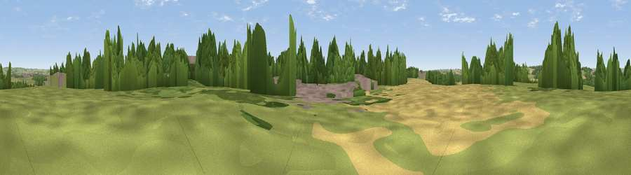

Burn Hill
#32868 in England · top 47% of its area beats it · near StoneThe view, rendered

A 360° render of this exact spot computed from the terrain model, tree cover and land cover — summer colours, afternoon light, calibrated against photographs of famous viewpoints. Real trees, hedges and buildings will differ in detail.
The panorama
Grey silhouette: terrain skyline in each direction (720 bearings, Earth curvature and refraction included). Dashed green: skyline with trees (+15 m) and buildings (+8 m) as obstacles. Blue strip: how far the ground is visible on each bearing.
Where the view opens
Wedge length = distance to the farthest visible ground on that bearing (vegetation-aware). Rings at 10, 25 and 50 km.
What fills the view
38% grassland · 26% cropland · 25% woodland · 10% built-up
Angular shares of the visible panorama (visual magnitude), not map area. Landscape diversity 0.57 (0–1 Shannon).
Key numbers
More beautiful places nearby
The staircase of upgrades: each row has a higher view potential than everything closer. Driving times are estimates from straight-line distance, calibrated against real road routing — check an actual route before setting out.
| Place | Direction | Drive | Score |
|---|---|---|---|
| Viewpoint near Upper Winchendon | NNW · 3 km | ~7 min | 42.0 |
| Viewpoint near Upper Winchendon | NNW · 4 km | ~8 min | 58.0 |
| Viewpoint near Upper Winchendon | W · 4 km | ~9 min | 58.9 |
| Viewpoint near Ashendon | WNW · 8 km | ~16 min | 65.0 |
| Beacon Hill | SE · 9 km | ~17 min | 72.7 |
| Coombe Hill Monument | SE · 9 km | ~18 min | 75.5 |
| Viewpoint near Woolstone | WSW · 54 km | ~76 min | 76.7 |
| Viewpoint near Meon Vale | WNW · 69 km | ~92 min | 77.0 |
51.80506, -0.87194 · source: dobih hill · position refined by local search. Computed location — check access rights before visiting.